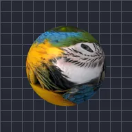

楕円体

レイヤーを球体に巻き付け、押しつぶしたり平らにしたりできます。
設定
| 設定項目 | 種類 | 範囲 | デフォルト |
|---|---|---|---|
| 回転X | 角度 | -3600°〜3600° | -15° |
| 回転Y | 角度 | -3600°〜3600° | 0° |
| 回転Z | 角度 | -3600°〜3600° | 0° |
| 半径 | 数値 | 0.02〜5 | 0.8 |
| 圧縮 | 数値 | 10%〜190% | 100% |
| 平坦化 | 数値 | 5%〜100% | 100% |
| 位置 | ポイント（X, Y） | -5000 px〜5000 px | 0 px, 0 px |
| スケール | 数値 | 0.05〜10 | 1 |
| パースペクティブ | 数値 | 0〜1 | 0.5 |
| シェーディング | 数値 | 0〜1 | 0.6 |
| 光源の角度 | 角度 | -3600°〜3600° | 135° |
| 光沢 | 数値 | 0〜1 | 0.3 |